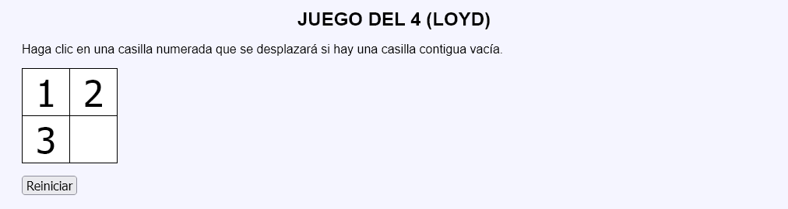
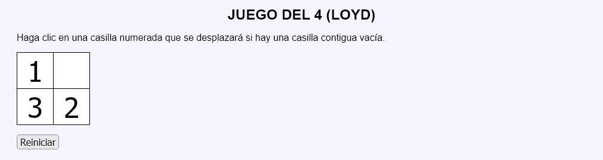
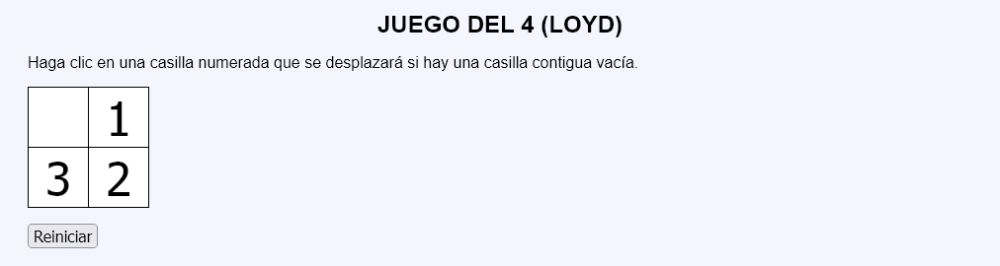
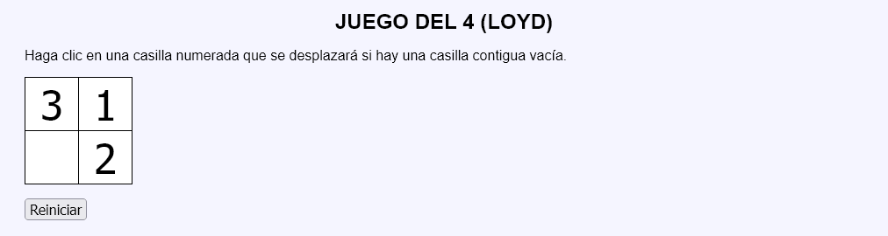

En este ejercicio se debe crear un programa que simule una versión mínima de un juego similar al famoso juego del 15, tradicionalmente atribuido al creador de rompecabezas norteamericano Sam Loyd. En el tablero cuadrado del juego del 15 hay una serie de piezas cuadradas con números sobre ellas que cubren casi todo el tablero, dejando un hueco del tamaño de una de las piezas. Las piezas se pueden desplazar horizontal o verticalmente si la casilla contigua está libre. la versión clásica tiene un tamaño 4 x 4 y en esta página se muestra un tablero reducido al tamaño 2 x 2.




<table>
<tr>
<td><button type="submit" name="accion" value="a1">1</button></td>
<td><button type="submit" name="accion" value="a2">2</button></td>
</tr>
<tr>
<td><button type="submit" name="accion" value="b1">3</button></td>
<td><button type="submit" name="accion" value="b2"></button></td>
</tr>
</table>